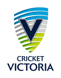

Cricket
Cricket physio, from someone who has worked in the game
Hamstring and side strains, bowling-related back pain, shoulder problems, and the niggles that build up across a long season. Assessed and managed by a physio with professional and international cricket experience.
Most cricket problems are load problems
Bowling spells, throwing, batting and repeated sprints between wickets all place specific, repeatable demands on the body. Most cricket injuries are not bad luck, they are a sign that workload has outpaced capacity somewhere.
I assess the injury and the workload behind it, settle the irritable phase where needed, then build the specific capacity your role demands. The aim is not just to get you pain-free, it is to get you back to bowling, batting or fielding at full output with a plan that holds up across a season.
Background
Worked in the game, not just around it
More than 15 years in elite sport, including professional and international cricket.
State and franchise cricket
Roles with Cricket Victoria, Melbourne Stars and Melbourne Renegades.
International cricket
Experience with Sri Lanka Cricket, Bangladesh Cricket Board and Hampshire Cricket.
Return-to-play criteria
Clearance based on objective testing, not just time off.
Workload-aware rehab
Plans built around bowling spells, batting load and sprint demands.
Affiliations
Teams and organisations I've worked with
Roles held across state, national and international cricket. Logos shown reflect past and present professional engagements.

Two ways to work with me
In person in Richmond, or online anywhere
In-person, at Bridge Road
Full assessment, hands-on treatment where useful, and gym-based rehab inside Uplift Gym on Bridge Road, Richmond. Best for club and social cricketers based locally, and for the first session after a significant injury.
Book an appointment →Online, via The Cricket Physio
Video consultations for cricketers anywhere, built specifically around bowling and batting workload. This is a separate practice I run alongside Bridge Road Physiotherapy, for players who can't get to Richmond in person.
Visit The Cricket Physio →The Cricket Physio is a separate practice offering online consultations only. If you are local to Richmond and want an in-person appointment, book directly with Bridge Road Physiotherapy above.
Common cricket problems treated here
- Hamstring and side strains, common in bowlers and fielders.
- Lower back pain and bone stress in fast bowlers managing a heavy spell load.
- Shoulder and rotator cuff issues from bowling, throwing and overhead batting.
- Niggles that build across a season rather than appearing as a single moment.
Ready to get on top of it?
Book an in-person session at Bridge Road, or visit The Cricket Physio for online consultations.